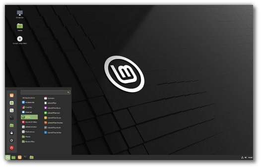

I have created an linux distro called LykosOS for those that are into linux
and want to use my configuration. I am using Arch Linux with a window manager called
i3 window manager. If you are interested you can download the script for Gitbub and
here is the Download
If you would like to try a linux distro that is like windows
then I would like to introduce you to Pop OS and

Linux Mint